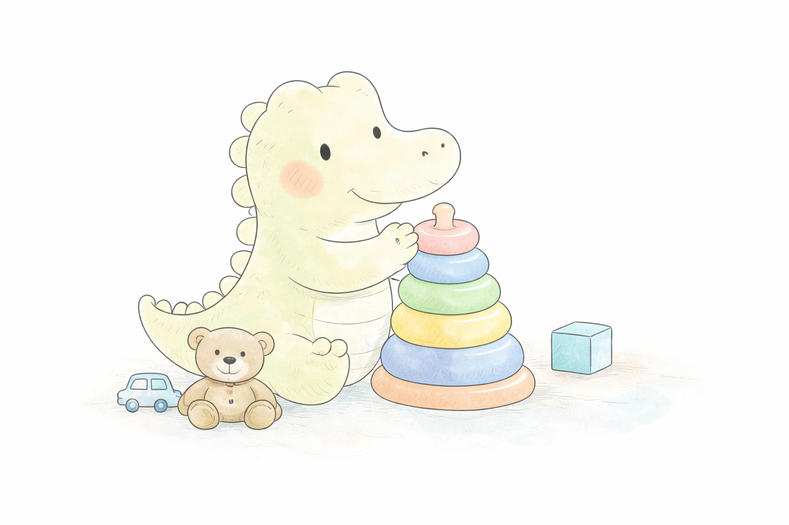
Estimulacion temprana (0-3 anos)Early intervention (0-3 years)
Acompanamos el desarrollo comunicativo de los mas pequenos desde sus primeros meses de vida.We support communication development from the earliest months of life.
Atencion en persona y online In-person and online support
Sesiones cercanas, ludicas y basadas en evidencia. Warm, playful, and evidence-based sessions.
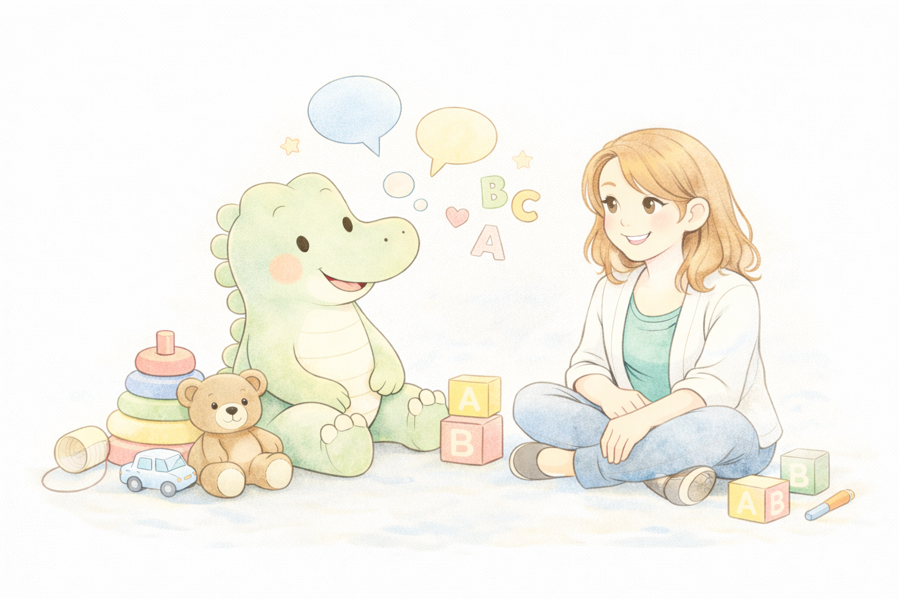
Intervencion adaptada a cada nino, con seguimiento y pautas claras para el dia a dia. Support tailored to each child, with follow-up and clear guidance for daily life.

Acompanamos el desarrollo comunicativo de los mas pequenos desde sus primeros meses de vida.We support communication development from the earliest months of life.
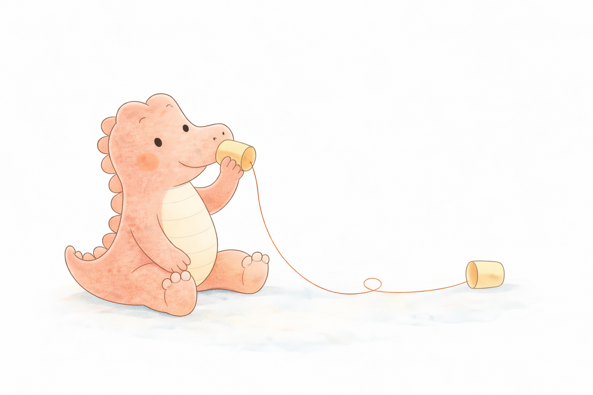
Intervencion en dificultades del lenguaje oral y la comunicacion adaptada a cada nino.Support for oral language and communication difficulties tailored to each child.
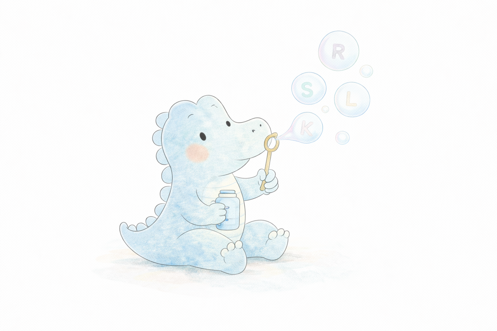
Ayudamos a mejorar la pronunciacion de los sonidos del habla de forma respetuosa y divertida.We help improve speech sound production in a respectful and engaging way.
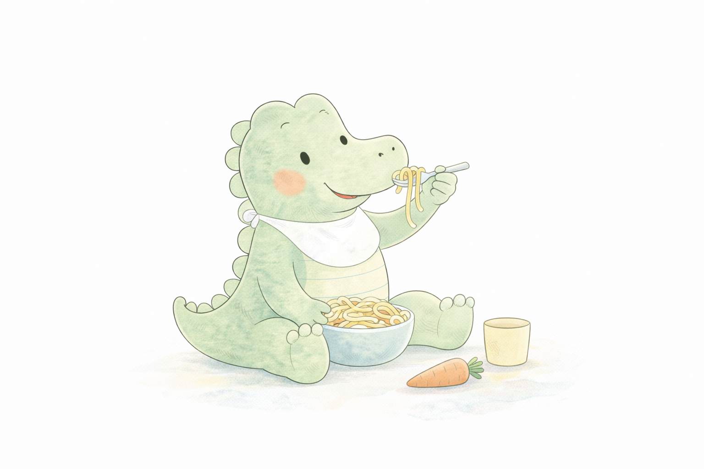
Acompanamiento en dificultades relacionadas con la alimentacion, la masticacion y la aceptacion de alimentos.Support for eating, chewing, swallowing, and acceptance of foods.
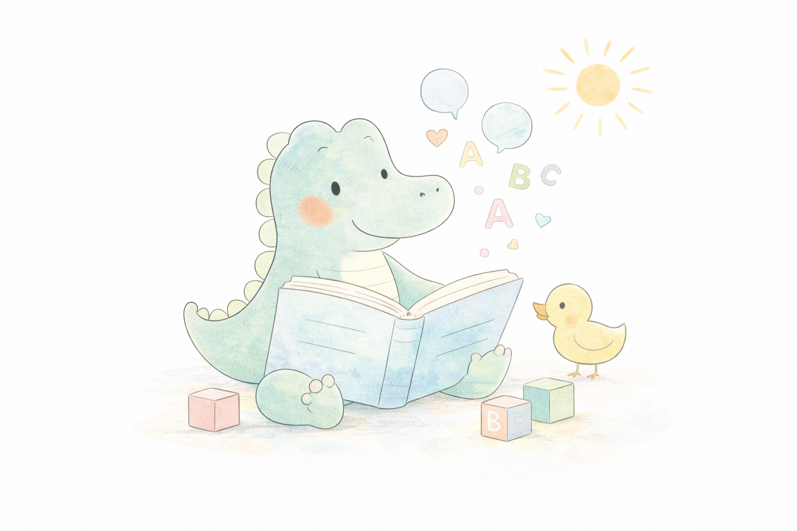
Apoyo a ninos con perfiles diversos de neurodesarrollo, respetando su forma unica de comunicarse.Support for children with diverse neurodevelopmental profiles, respecting their unique communication style.
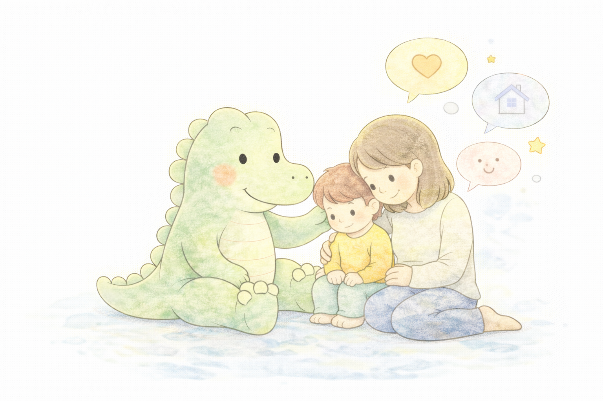
Las familias son una parte fundamental del proceso terapeutico.Families are a fundamental part of the therapeutic process.
Acompano a ninos y a sus familias en el desarrollo del habla, el lenguaje y la comunicacion desde un enfoque cercano, respetuoso y basado en la evidencia cientifica.
Mi objetivo es crear un espacio seguro y de confianza donde cada nino pueda expresarse, aprender y crecer a su propio ritmo.
Hola, soy NOMBRE, logopeda especializada en infancia, lenguaje y neurodesarrollo. Trabajo principalmente con ninos desde los primeros anos de vida hasta la etapa escolar.
I support children and their families in speech, language, and communication through a warm, respectful, and evidence-based approach.
My goal is to create a safe and trusting space where every child can express themselves, learn, and grow at their own pace.
Hello, I am NAME, a speech and language therapist specialised in childhood, language, and neurodevelopment. I work mainly with children from the early years through school age.
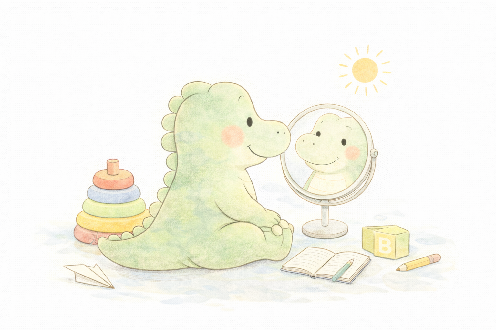
Respuestas rapidas para empezar con calma.Quick answers to help you get started calmly.
Desde bebes con orientacion familiar hasta adolescentes.From babies with family guidance through adolescence.
Si, segun el caso. Tambien ofrecemos material para casa.Yes, depending on the case. We also provide home support materials.
Reserva una evaluacion inicial y disenaremos un plan personalizado.Book an initial assessment and we will design a personalised plan.
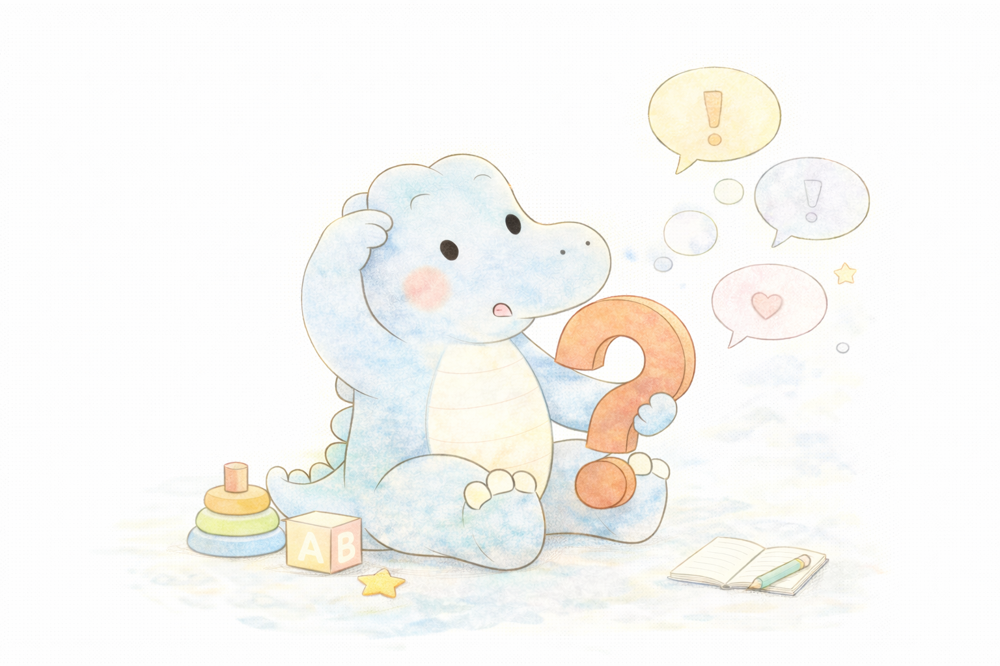
Empieza con una evaluacion inicial para entender vuestras necesidades y recomendar el mejor plan de apoyo.Start with an initial assessment to understand your needs and recommend the best support plan.
Reservar primera citaBook first appointment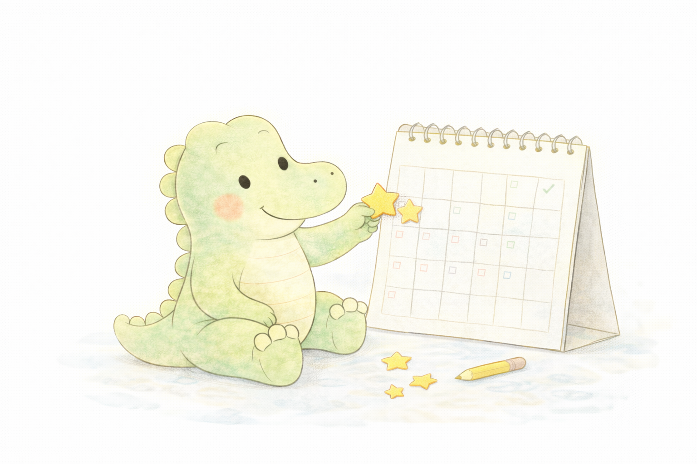
Reserva una evaluacion inicial y te ayudare a encontrar el plan adecuado para tu hijo.Book an initial assessment and I will help you find the right plan for your child.
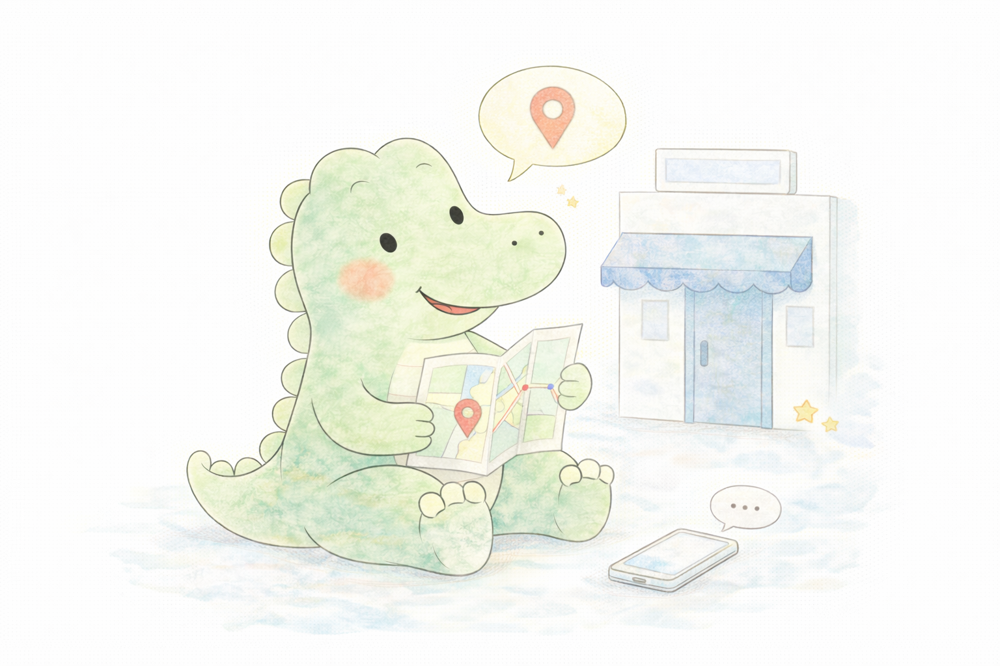